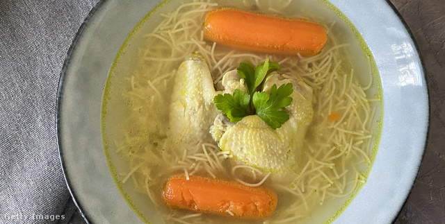

becsi
A hússzeleteket helyezzük vágódeszkára és távolítsuk el az esetleges hártyákat, majd klopfoljuk vékonyra. Sózzuk és borsozzuk mindkét oldalán. A lisztet és a zsemlemorzsát öntsük egy lapostányérra, a tojást verjük fel egy mélytányérban.
2. lépés
A húszeleteket egymás után forgassuk meg először a lisztben, majd helyezzük bele a felvert tojásba és ügyeljünk rá, hogy ne maradjanak száraz részek sehol. Végezetül forgassuk meg a hússzeleteket a zsemlemorzsában és a villa hátoldalával nyomkodjuk rá egy kicsit a panírt, így az jobban megtapad a húson.
3. lépés
Egy nagy serpenyőben (vagy 2 közepesben) olvasszunk meg annyi vajzsírt, hogy a hússzeletek szinte úszni tudjanak benne (vagy hevíthetünk növényi olajat 1-2 evőkanál vajzsírral vagy vajjal).
4. lépés
A panírozott hússzeleteket csak akkor tegyük a serpenyőbe, ha az olaj már olyan forró, hogy felhabzik, amikor egy-egy darab zsemlemorzsát vagy egy kis darab vajat dobunk bele.
5. lépés
A szeleteket vastagságuktól és a hús fajtájától függően 2 perc (vékony borjúszeletek esetén) vagy 4 perc (vastagabb sertésszelet) alatt süssük aranybarnára az egyik oldalukon, majd egy húsfogóval fordítsuk meg (ne szúrjunk bele villát) és a másik oldalukat is süssük aranybarnára.
6. lépés
A ropogós szeleteket vegyük ki a serpenyőből és helyezzük egy papírtörlőre, majd óvatosan itassuk fel róla az olajat. Az elkészült bécsi szeletet tegyük tányérra és a felszolgálás előtt díszítsük citromkarikákkal.
7. lépés
Köretként petrezselymes burgonyát, rizst, krumplisalátát vagy zöldsalátát kínálhatunk hozzá..
husleves

Az aranyló húsleves receptjének elkészítéséhez első lépésként a csirkefarhátat folyó, hideg víz alatt átöblítjük, egy éles késsel több darabra vágjuk és eltávolítjuk a zsírzóját. A csontos húst nagy fazékba tesszük.
A sárgarépát, a fehérrépát, a karalábét, a zellert, a burgonyát és a hagymákat meghámozzuk, megtisztítjuk. A répákat, a karalábét és a zellert elfelezve, esetleg negyedelve, a vöröshagymát, burgonyát és a fokhagymagerezdeket egyben hagyva a csontos hús mellé tesszük.
Hozzáadjuk az egészben hagyott paprikát és paradicsomot is, és felöntjük annyi hideg vízzel, hogy éppen ellepje. Beleszórunk egy teáskanál sót és a legalacsonyabb fokozaton, kis lángon gyöngyöztetve főzni kezdjük.
A főzés elején lehabozzuk, erre egyszer biztosan, de kétszer is sor kerülhet. Ha már úgy látjuk, nem képződik több hab, akkor a leveshez adjuk a szemesborsot, az őrölt szerecsendiót és a kurkumát, valamint ismét sózhatunk, ha szükséges. Továbbra is alacsony lángon, gyöngyöztetve főzzük 3-4 órán át fedő nélkül.
Az elpárolgott vizet egy-két decinként pótolhatjuk, ha szeretnénk.
Amikor minden zöldség megpuhult, a leves gyönyörű sárga színű és illatos, akkor elzárjuk a hőforrást, kiszedjük a húsokat és a zöldségeket, a levet pedig egy órán át ülepítjük. Ezután átszűrjük egy finomszövésű szűrőn és ízlés szerint a zöldségekkel, esetleg főtt csigatésztával tálaljuk.
steak

A hátszín mindkét oldalát forró olajban 1-1 percig sütjük, majd hozzáadjuk a kissé összetört fokhagymát és újabb 1-1 percig sütjük. Legvégül vajat adunk hozzá és azzal locsolgatjuk a húst. Tányérra tesszük, és 10 percig pihentetjük.